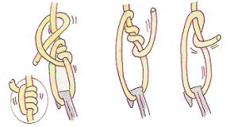
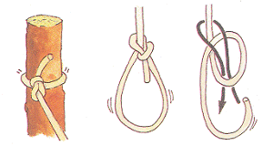

ためしてみようロープワーク
自在結び
もやい結び


テントやタープを張るときに使う。結び目を動かすことで長さを自由に変えられる。
船を杭などに係留するために使われ、慣れれば片手でも結ぶことができる。
引きとけ結び
巻き結び
輪を作ってから木など他の物に掛けたり、最後に解きやすくしたいときに使う。
結び目の左右に均等に力がかかるので、単純な結び方だが強くてずれない。
ロープワークの練習は、１〜１．５ｍの長さがやり易い